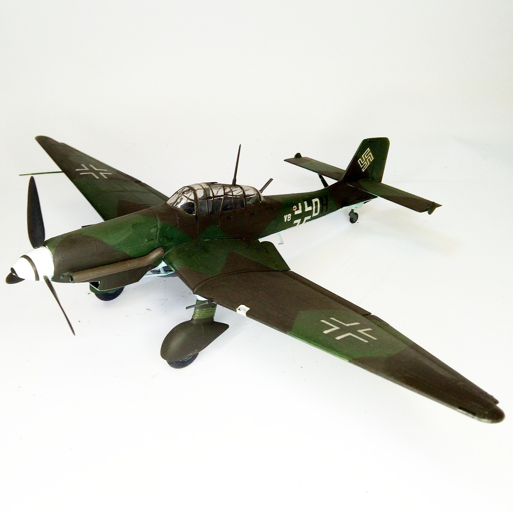

Aerei · scale model archive
Junkers Ju87 D
Junkers Ju87 D — Kit: Monogram, Scale: 1/48. Night attack version, nice aerodynamic refinement of the original StuKa concept even though the fixed…

Photo gallery
English description
Night attack version, nice aerodynamic refinement of the original StuKa concept even though the fixed undercarriage still limited its performance
#1/48 #Monigram
Descrizione italiana
Night attack versione, bello aerodynamic refinement del original StuKa concetto even though il fixed autorello still limited its performance.